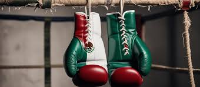

El boxeo ha servido como una herramienta de inclusión y desarrollo social en numerosos países. Muchos gimnasios ofrecen espacios seguros donde niños y jóvenes pueden desarrollar habilidades físicas y valores personales.
La disciplina, la constancia y el respeto son enseñanzas fundamentales que acompañan a quienes practican este deporte. Estas cualidades suelen trasladarse a la vida diaria y profesional.
Numerosas historias de superación demuestran cómo el boxeo puede convertirse en una oportunidad para transformar vidas, fomentando la confianza, la responsabilidad y la búsqueda de metas personales.
